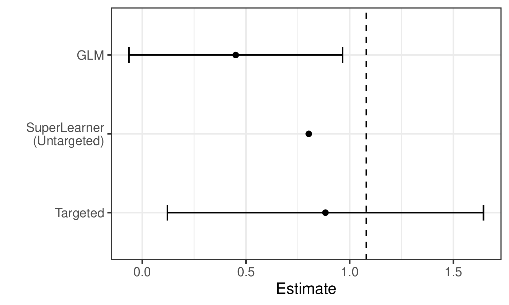

来源 ：Targeted Learning in R: Causal Data Science with the tlverse Software Ecosystem CC BY 4.0 非原文 ；依 CC BY 4.0 保留原作者署名与许可证声明，并标明本页是经过修改（翻译）的版本。 原作品按「现状」提供，原作者不附任何明示或默示的担保（见 CC BY 4.0 第 5 节免责声明）；译文中的任何疏漏由译者负责，不代表原作者观点。 译自源码仓库 tlverse/tlverse-handbook 修订 2931693（2024-09-21）的 07-tmle3.Rmd。本章作者为 Jeremy Coyle 。 页内 R 代码块按原文逐字保留，并由本站以 R 4.4.3 重新执行；示意图为原书静态图片，按原样引用。
\(\DeclareMathOperator{\expit}{expit}\)
\(\DeclareMathOperator{\logit}{logit}\)
\(\DeclareMathOperator*{\argmin}{\arg\!\min}\)
\(\newcommand{\indep}{\perp\!\!\!\perp}\)
\(\newcommand{\R}{\mathbb{R}}\)
\(\newcommand{\E}{\mathbb{E}}\)
\(\newcommand{\M}{\mathcal{M}}\)
\(\newcommand{\I}{\mathbb{I}}\)
TMLE 框架
Jeremy Coyle
基于 tmle3 R 包
学习目标
读完本章之后，你将能够：
理解我们为什么用 TMLE 做效应估计。
用 tmle3 估计平均处理效应（ATE）。
理解如何使用 tmle3 的 “Spec” 对象。
针对一组自定义的目标参数拟合 tmle3。
用 delta 方法估计目标参数的变换。
引言
在上一章关于 sl3 的内容中，我们学会了如何从数据估计诸如 \(\mathbb{E}[Y \mid X]\) 这样的回归函数。这是从数据中学习的重要第一步，但我们怎样才能用这个预测模型去估计统计效应与因果效应呢？
回到靶向学习的路线图 ，假设我们想估计处理变量 \(A\) 对结局 \(Y\) 的效应。如前所述，刻画该效应的一个可能参数是平均处理效应（ATE），定义为 \(\psi_0 = \mathbb{E}_W[\mathbb{E}[Y \mid A=1,W] - \mathbb{E}[Y \mid A=0,W]]\) ，可解释为在协变量 \(W\) 的分布上取平均后，处理 \(A=1\) 与 \(A=0\) 之下结局均值之差。我们将用下面这份示例数据，演示这一参数的几种可能估计量，并由此引出使用 TMLE（靶向最大似然估计；靶向最小损失估计）框架的动机：
右侧的小刻度分别标出了 \(A=1\) 与 \(A=0\) 之下（对 \(W\) 取平均后的）结局均值，二者之差正是我们想估计的量。
尽管我们希望在本章中讲清应用 TMLE 的动机，但有兴趣深究的读者请参阅两本靶向学习专著及相关著作，以获取完整的技术细节。
代入型估计量
我们可以用 sl3 拟合一个超级学习器或其他回归模型，来估计结局回归函数 \(\mathbb{E}_0[Y \mid A,W]\) ——我们常把它记作 \(\overline{Q}_0(A,W)\) ，其估计记作 \(\overline{Q}_n(A,W)\) 。要构造 ATE 的估计 \(\psi_n\) ，我们只需把在两种干预对照下求值的 \(\overline{Q}_n(A,W)\) 估计”代入”相应的 ATE “代入”公式：\(\psi_n = \frac{1}{n}\sum(\overline{Q}_n(1,W)-\overline{Q}_n(0,W))\) 。这类估计量被称为代入型 （plug-in／substitution）估计量，因为只要把相关回归函数 \(\overline{Q}_0(A,W)\) 本身换成它们的估计 \(\overline{Q}_n(A,W)\) ，就可以得到参数 \(\psi_0\) 的准确估计 \(\psi_n\) 。
把 sl3 用于估计我们例子中的结局回归，可以看到集成机器学习的预测对数据拟合得相当好：
实线表示 sl3 对回归函数的估计，虚线则表示 tmle3 的更新（见下文 ）。
代入型估计量虽然直观，但若不加思索地把超级学习器对 \(\overline{Q}_0(A,W)\) 的估计用于这一做法，会有若干局限。首先，超级学习器选择学习器权重时，是为了最小化整条回归函数上的风险，而不是”靶向”我们想估计的那个 ATE 参数，这会导致估计有偏。也就是说，sl3 力求在左侧那整条回归曲线上做得好，而不是聚焦于右侧那两个小刻度。不仅如此，这一做法的抽样分布不是渐近线性的，因而无法作推断。
在为示例数据生成的估计中，可以看到这些局限：

可以看到，超级学习器对真实参数值（由竖虚线标出）的估计比 GLM 更准确。然而它仍不如 TMLE 准确，而且无法作有效推断。相比之下，TMLE 既得到偏倚更小的估计量，又能作有效推断。
靶向最大似然估计
TMLE 以初始估计 \(\overline{Q}_n(A,W)\) 以及倾向性评分的估计 \(g_n(A \mid W) = \mathbb{P}(A = 1 \mid W)\) 为输入，产生一个针对所关心参数作了”靶向”的更新估计 \(\overline{Q}^{\star}_n(A,W)\) 。TMLE 保留了代入型估计量的好处（它本身就是一个代入型估计量），同时对原本可能不稳定的估计作了增补以校正偏倚 ，并由此得到一个渐近线性 （因而服从正态分布）的估计量，从而支持通过渐近相合的 Wald 型置信区间作推断。
TMLE 更新
TMLE 有不同类型（有时同一组目标参数还有多种 TMLE）——下面给出针对 ATE 的 TML 估计算法示例。\(\overline{Q}^{\star}_n(A,W)\) 是 TMLE 增补后的估计：\(f(\overline{Q}^{\star}_n(A,W)) = f(\overline{Q}_n(A,W)) + \epsilon \cdot H_n(A,W)\) ，其中 \(f(\cdot)\) 是合适的连接函数（例如 \(\text{logit}(x) = \log(x / (1 - x))\) ），而”聪明协变量”（clever covariate）\(H_n(A,W)\) 的系数 \(\epsilon\) 会被估计为 \(\epsilon_n\) 。协变量 \(H_n(A,W)\) 的形式因目标参数而异；在 ATE 这一情形下，它是 \(H_n(A,W) = \frac{A}{g_n(A \mid W)} - \frac{1-A}{1-g_n(A, W)}\) ，其中 \(g_n(A,W) = \mathbb{P}(A=1 \mid W)\) 是估计的倾向性评分。因此该估计量既依赖于（由 sl3 给出的）结局回归的初始拟合 \(\overline{Q}_n\) ，也依赖于倾向性评分的初始拟合 \(g_n\) 。
tlverse 中采用了若干稳健性增补，包括引入额外一层交叉验证以避免过拟合偏倚（即 CV-TMLE），以及更一致地同时估计多个参数的做法（例如生存曲线上的各个点）。
统计推断
由于 TMLE 给出的是渐近线性 估计量，作统计推断非常方便。每个 TML 估计量都有一个对应的（有效）影响函数 （常简称 “EIF”），它刻画了该估计量的渐近分布。利用估计出的 EIF，只需把初始估计 \(\overline{Q}_n\) 与 \(g_n\) 代入 EIF 的表达式，再计算样本标准误，就能构造 Wald 型推断（渐近正确的置信区间）。
下面几节介绍在 tlverse 中设定与估计 TMLE 的简易做法与更细致的做法。在设计 tmle3 时，我们力求尽可能贴近地复刻 TMLE 这一非常通用的估计框架，因此与 TMLE 相关的每个理论对象，都由一个相应的软件对象／方法来编码。首先我们展示 tmle3 在 WASH Benefits 例子上的简易应用，然后再更详细地描述底层的各个对象。
开箱即用示例：用 tmle3 估计 ATE
我们用前面介绍过的 WASH Benefits 数据，演示 TMLE 最基本的用法——估计一个平均处理效应。
载入数据
我们使用与前几章相同的 WASH Benefits 数据：
library (data.table)library (dplyr)
Attaching package: 'dplyr'
The following objects are masked from 'package:data.table':
between, first, last
The following objects are masked from 'package:stats':
filter, lag
The following objects are masked from 'package:base':
intersect, setdiff, setequal, union
library (tmle3)library (sl3)<- fread (paste0 ("https://raw.githubusercontent.com/tlverse/tlverse-data/master/" ,"wash-benefits/washb_data.csv" stringsAsFactors = TRUE
定义变量角色
我们采用常见的 \(W\) （协变量）、\(A\) （处理／干预）、\(Y\) （结局）数据结构。tmle3 需要知道数据集中哪些变量对应这些角色，我们用一个字符向量的列表来告诉它。我们把它称作”节点列表”（Node List），因为它对应有向无环图（DAG）中的节点——DAG 是一种展示变量间因果关系的方式。
<- list (W = c ("month" , "aged" , "sex" , "momage" , "momedu" ,"momheight" , "hfiacat" , "Nlt18" , "Ncomp" , "watmin" ,"elec" , "floor" , "walls" , "roof" , "asset_wardrobe" ,"asset_table" , "asset_chair" , "asset_khat" ,"asset_chouki" , "asset_tv" , "asset_refrig" ,"asset_bike" , "asset_moto" , "asset_sewmach" ,"asset_mobile" A = "tr" ,Y = "whz"
处理缺失
目前 tmle3 对缺失的处理相当简单：
缺失的协变量按中位数（连续）或众数（离散）插补，并生成额外的协变量来指示是否作过插补，做法与 sl3 一章
缺失的处理变量会被剔除——这类观测被丢弃。
缺失的结局通过自动计算删失概率倒数权重 （IPCW）并把它纳入估计量来高效处理；这也被称为 IPCW-TMLE，可以看作一种消除缺失的联合干预，与经典逆概率加权估计量所用的做法类似。
这些步骤由 tmle3 的 process_missing 函数实现：
<- process_missing (washb_data, node_list)<- processed$ data<- processed$ node_list
创建 “Spec” 对象
tmle3 很通用，允许以模块化方式设定 TMLE 流程中的大多数组件。不过多数用户并不想手工设定所有这些组件。因此，tmle3 实现了 tmle3_Spec 对象，把一组组件打包成一份规格说明 （“Spec”），只需再补充极少量细节就能跑起来拟合一个 TMLE。
我们先从使用其中一个 spec 开始，再一步步深入 tmle3 的内部。
<- tmle_ATE (treatment_level = "Nutrition + WSH" ,control_level = "Control"
定义学习器
目前，用户还必须定义的另一样东西，就是用来估计似然中相关因子（Q 与 g）的 sl3 学习器。
它的形式是一个 sl3 学习器列表，每个要用 sl3 估计的似然因子对应一个：
# choose base learners <- make_learner (Lrnr_mean)<- make_learner (Lrnr_ranger)# define metalearners appropriate to data types <- make_learner (Lrnr_nnls)<- make_learner (<- Lrnr_sl$ new (learners = list (lrnr_mean, lrnr_rf),metalearner = ls_metalearner<- Lrnr_sl$ new (learners = list (lrnr_mean, lrnr_rf),metalearner = mn_metalearner<- list (A = sl_A, Y = sl_Y)
这里我们用的是上一章定义的超级学习器。将来我们打算提供合理的默认学习器。
拟合 TMLE
现在我们已具备用 tmle3 拟合 TMLE 所需的一切：
<- tmle3 (ate_spec, washb_data, node_list, learner_list)print (tmle_fit)
A tmle3_Fit that took 1 step(s)
type param init_est tmle_est
<char> <char> <num> <num>
1: ATE ATE[Y_{A=Nutrition + WSH}-Y_{A=Control}] -0.005938094 0.01321346
se lower upper psi_transformed lower_transformed
<num> <num> <num> <num> <num>
1: 0.05034791 -0.08546663 0.1118936 0.01321346 -0.08546663
upper_transformed
<num>
1: 0.1118936
评估估计结果
打印拟合对象就能看到汇总结果。此外，我们也可以通过索引从摘要中提取结果：
<- tmle_fit$ summary$ psi_transformedprint (estimates)
tmle3 的组件既然我们已经成功用一个 spec 得到了 TML 估计，那就来看看引擎盖下的各个组件。spec 有若干函数，用来生成定义和拟合一个 TMLE 所必需的对象。
tmle3_task首先是 tmle3_Task，它类似于 sl3_Task，包含我们要拟合 TMLE 的数据，以及由上面定义的 node_list 生成的 NPSEM——后者描述各变量及其相互关系。
<- ate_spec$ make_tmle_task (washb_data, node_list)
$W
tmle3_Node: W
Variables: month, aged, sex, momedu, hfiacat, Nlt18, Ncomp, watmin, elec, floor, walls, roof, asset_wardrobe, asset_table, asset_chair, asset_khat, asset_chouki, asset_tv, asset_refrig, asset_bike, asset_moto, asset_sewmach, asset_mobile, momage, momheight, delta_momage, delta_momheight
Parents:
$A
tmle3_Node: A
Variables: tr
Parents: W
$Y
tmle3_Node: Y
Variables: whz
Parents: A, W
初始似然
接下来是一个表示似然的对象，它按上面描述的 NPSEM 作了因子分解：
<- ate_spec$ make_initial_likelihood (print (initial_likelihood)
W: Lf_emp
A: LF_fit
Y: LF_fit
似然的这些组成部分标明了各因子是如何估计的：\(W\) 的边际分布用 NP-MLE 估计，\(A\) 与 \(Y\) 的条件分布用（由上面 learner_list 定义的）sl3 拟合来估计。
我们可以把它与 tmle_task 对象配合，取得每个观测的似然估计：
$ get_likelihoods (tmle_task)
W A Y
<num> <num> <num>
1: 0.0002129925 0.3359464 -0.3359038
2: 0.0002129925 0.3629072 -0.8680437
3: 0.0002129925 0.3302245 -0.8162639
4: 0.0002129925 0.3414138 -0.9019030
5: 0.0002129925 0.3314567 -0.5616767
---
4691: 0.0002129925 0.2347419 -0.5535425
4692: 0.0002129925 0.2118675 -0.1995304
4693: 0.0002129925 0.2142428 -0.7893287
4694: 0.0002129925 0.2590327 -0.9174161
4695: 0.0002129925 0.1879972 -1.1040952
靶向似然（更新器）
我们还需要定义一个”靶向似然”（Targeted Likelihood）对象。这是一类特殊的似然，可以用 tmle3_Update 对象来更新。该对象定义了更新策略（例如子模型、损失函数、是否用 CV-TMLE）。
<- Targeted_Likelihood$ new (initial_likelihood)
构造靶向似然时，可以指定不同的更新选项。各选项的细节见 tmle3_Update 的文档。例如，可以像下面这样关闭 CV-TMLE（它是 tmle3 的默认设置）：
<- $ new (initial_likelihood,updater = list (cvtmle = FALSE )
参数映射
最后，我们需要定义所关心的参数。这里 spec 定义了单个参数，即 ATE。下一节我们会看到如何添加更多参数。
<- ate_spec$ make_params (tmle_task, targeted_likelihood)print (tmle_params)
[[1]]
Param_ATE: ATE[Y_{A=Nutrition + WSH}-Y_{A=Control}]
把它们拼到一起
用 spec 手工生成了这些组件之后，我们现在可以手工拟合一个 tmle3：
<- fit_tmle3 ($ updaterprint (tmle_fit_manual)
A tmle3_Fit that took 1 step(s)
type param init_est tmle_est
<char> <char> <num> <num>
1: ATE ATE[Y_{A=Nutrition + WSH}-Y_{A=Control}] -0.008351299 0.02236178
se lower upper psi_transformed lower_transformed
<num> <num> <num> <num> <num>
1: 0.05031417 -0.07625219 0.1209757 0.02236178 -0.07625219
upper_transformed
<num>
1: 0.1209757
结果与上面用 tmle3 函数拟合是等价的。
拟合带多个参数的 tmle3
上面我们拟合了只有一个参数的 tmle3。tmle3 也支持同时拟合多个参数。为演示这一点，我们使用 tmle_TSM_all 这个 spec：
<- tmle_TSM_all ()<- Targeted_Likelihood$ new (initial_likelihood)<- tsm_spec$ make_params (tmle_task, targeted_likelihood)print (all_tsm_params)
[[1]]
Param_TSM: E[Y_{A=Control}]
[[2]]
Param_TSM: E[Y_{A=Handwashing}]
[[3]]
Param_TSM: E[Y_{A=Nutrition}]
[[4]]
Param_TSM: E[Y_{A=Nutrition + WSH}]
[[5]]
Param_TSM: E[Y_{A=Sanitation}]
[[6]]
Param_TSM: E[Y_{A=WSH}]
[[7]]
Param_TSM: E[Y_{A=Water}]
这个 spec 为暴露变量的每个水平生成一个处理特异均值（Treatment Specific Mean, TSM）。注意，我们必须先生成一个新的靶向似然，因为旧的那个已经针对 ATE 作过靶向。不过，我们可以复用上面拟合好的初始似然，从而省去一次超级学习器步骤。
Delta 方法
我们还可以基于其他参数的 Delta 方法变换来定义参数。例如，我们可以用 delta 方法和上面两个 TSM 参数来估计 ATE：
<- define_param (list (all_tsm_params[[1 ]], all_tsm_params[[4 ]])print (ate_param)
Param_delta: E[Y_{A=Nutrition + WSH}] - E[Y_{A=Control}]
同样的做法可用于估计相对危险度、人群归因危险度等其他派生参数。
拟合
现在我们可以同时为所有 TSM 参数以及上面定义的 ATE 参数拟合 TMLE：
<- c (all_tsm_params, ate_param)<- fit_tmle3 ($ updaterprint (tmle_fit_multiparam)
A tmle3_Fit that took 1 step(s)
type param init_est tmle_est
<char> <char> <num> <num>
1: TSM E[Y_{A=Control}] -0.593985832 -0.62585978
2: TSM E[Y_{A=Handwashing}] -0.615742565 -0.65588346
3: TSM E[Y_{A=Nutrition}] -0.609011426 -0.61206960
4: TSM E[Y_{A=Nutrition + WSH}] -0.602337130 -0.60374453
5: TSM E[Y_{A=Sanitation}] -0.585263151 -0.58342047
6: TSM E[Y_{A=WSH}] -0.518311115 -0.45666522
7: TSM E[Y_{A=Water}] -0.565650729 -0.53396333
8: ATE E[Y_{A=Nutrition + WSH}] - E[Y_{A=Control}] -0.008351299 0.02211525
se lower upper psi_transformed lower_transformed
<num> <num> <num> <num> <num>
1: 0.02986817 -0.68440032 -0.5673192 -0.62585978 -0.68440032
2: 0.04158268 -0.73738401 -0.5743829 -0.65588346 -0.73738401
3: 0.04202370 -0.69443455 -0.5297047 -0.61206960 -0.69443455
4: 0.04071068 -0.68353599 -0.5239531 -0.60374453 -0.68353599
5: 0.04194720 -0.66563547 -0.5012055 -0.58342047 -0.66563547
6: 0.04508391 -0.54502807 -0.3683024 -0.45666522 -0.54502807
7: 0.03902808 -0.61045697 -0.4574697 -0.53396333 -0.61045697
8: 0.05031418 -0.07649873 0.1207292 0.02211525 -0.07649873
upper_transformed
<num>
1: -0.5673192
2: -0.5743829
3: -0.5297047
4: -0.5239531
5: -0.5012055
6: -0.3683024
7: -0.4574697
8: 0.1207292
习题
用 tmle3 估计 ATE
按下面的步骤，用来自协作围产期项目（Collaborative Perinatal Project, CPP）的数据估计一个平均处理效应；该数据可从 sl3 包中取得。为简化这个例子，我们定义一个二值干预变量 parity01——表示在当前这个孩子之前是否已有一个或多个孩子；以及一个二值结局 haz01——表示身高别年龄是否高于平均水平。
# load the data set data (cpp)<- cpp %>% as_tibble () %>% :: filter (! is.na (haz)) %>% mutate (parity01 = as.numeric (parity > 0 ),haz01 = as.numeric (haz > 0 )
通过创建一个节点列表来定义变量角色 \((W,A,Y)\) 。在 \(W\) 中纳入以下基线协变量：apgar1、apgar5、gagebrth、mage、meducyrs、sexn。\(A\) 与 \(Y\) 已在上面给出。数据中的缺失（具体是节点列表中所指定那些列的缺失）需要处理；可以像上面 washb_data 的例子那样，用 process_missing 函数来完成。
为 ATE 定义一个 tmle3_Spec 对象，即 tmle_ATE()。
使用上面定义的同一批基学习库，为估计 \(\overline{Q}_0 = \mathbb{E}_0(Y \mid A, W)\) 与 \(g_0 = \mathbb{P}(A = 1 \mid W)\) 指定 sl3 基学习器。
像下面这样定义元学习器。
<- make_learner (loss_function = loss_loglik_binomial,learner_function = metalearner_logistic_binomial
分别定义一个用于估计 \(\overline{Q}_0\) 的超级学习器和一个用于估计 \(g_0\) 的超级学习器。两者都使用上面的元学习器。
把上一步定义的两个超级学习器放进一个列表，命名为 learner_list。列表的名字应当是 A（定义估计 \(g_0\) 的超级学习器）和 Y（定义估计 \(\overline{Q}_0\) 的超级学习器）。
用 tmle3 函数拟合 TMLE，需要指定：(1) 第 2 步定义的 tmle3_Spec；(2) 数据；(3) 第 1 步指定的节点列表；以及 (4) 第 6 步定义的、用于估计 \(g_0\) 与 \(\overline{Q}_0\) 的超级学习器列表。注意 ：和之前一样，你需要显式地复制一份数据（以规避 data.table 的优化），例如 cpp2 <- data.table::copy(cpp)，之后都使用 cpp2 这份数据。
小结
tmle3 是一个用于生成 TML 估计的通用框架。使用它最简单的方式，是用一个预定义的 spec，这样你只需填上数据、变量角色和 sl3 学习器这几个空。不过，深入引擎盖之下，用户可以设定范围广泛的各种 TMLE。在接下来的几节中，我们会看到这一框架如何被用来估计最优处理、随机移位干预等进阶参数。